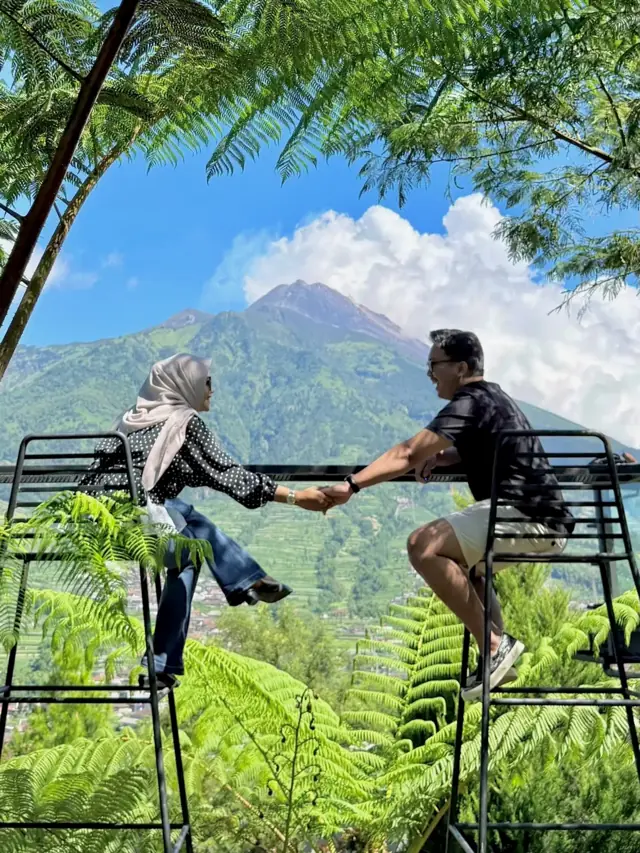
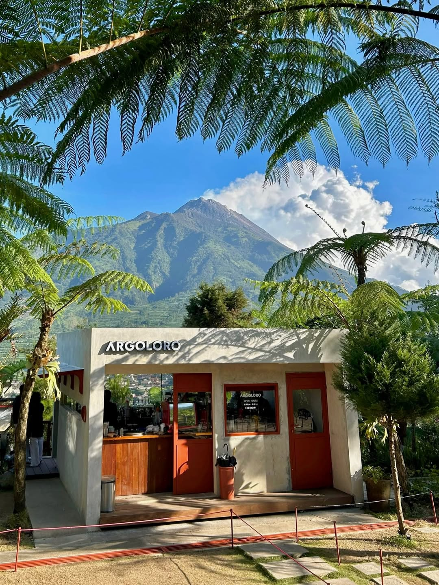
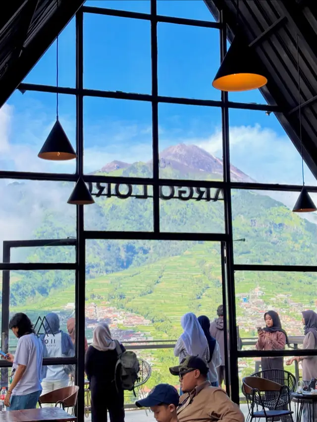

Spot favorit
Kursi tinggi
Kursi tinggi
hadap Merapi
Paling ramai difoto. Datang 06.00–09.00 saat kabut belum naik.

Selo · Boyolali · 1.700 mdpl
Ngopi di kaki Merapi
coffee & eatery · Dusun II Samiran, Selo

Paling ramai difoto. Datang 06.00–09.00 saat kabut belum naik.
Buka setiap hari, termasuk tanggal merah
WiFi + banyak colokan, aman buat kerja seharian

Tetap dapat view walau hujan atau angin gunung lagi kencang.
Udara dingin sepanjang hari — bawa jaket tipis
Searah basecamp pendakian Merapi & Merbabu
Dusun II, Samiran, Selo, Boyolali, Jawa Tengah
Mulai Navigasi Buka di Google Maps